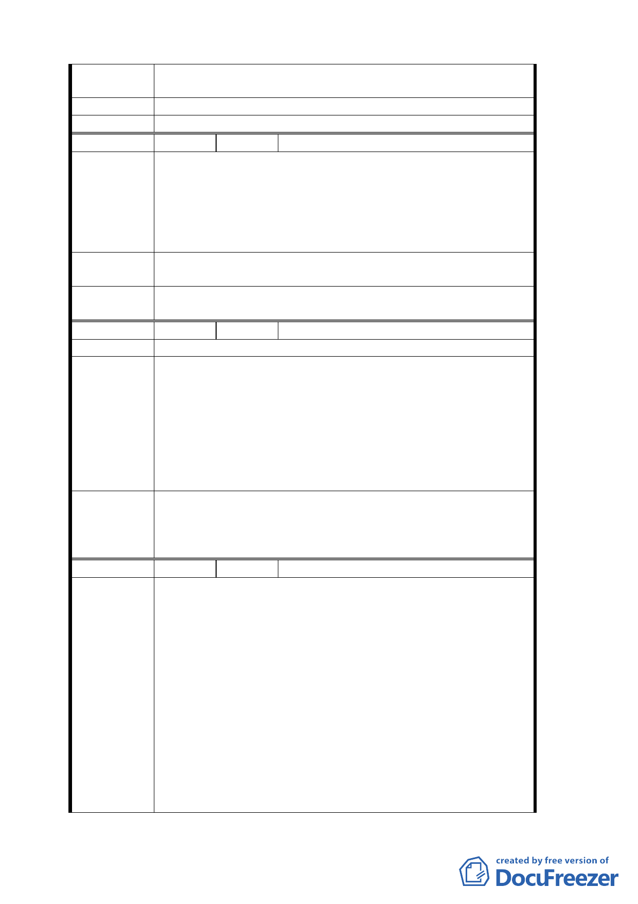

陳情理由
建議辦法
委員會決議
根據私立學校法第 49 條，私立學校可請求附近讓售協助學校公共
性增強以發展教育。
請協助地主優先讓售土地給本校繼續九年一貫國民基礎教育。
有關優先讓售土地等事宜非屬本案審議範疇。
編號
陳情理由
建議辦法
委員會決議
5 陳情人 臺北市文山區永建國民小學
1. 永建國小學區屬文山區華興里及試院里，校地面積僅 4747 平方
公尺，93 學年度學生總人數達 840 人，平均每生使用 5.66 平方
公尺，不及部頒每生 12 平方公尺標準。
2. 因面積狹小，學生活動空間不足，已嚴重影響學童受教權益。
3. 要符合教育部頒標準，校地面積需 2 公頃以上，且須在附近地
區才能方便孩子就學。
請盡速完成永建遷校之用地規劃，俾學區學童能擁有合於設校標準
之學校用地，以改善學童學習環境。
有關變更後永建國小之校地利用與空間規劃，依市府補充資料及簡
報資料等修正內容通過。
編號
陳情理由
建議辦法
委員會決議
6 陳情人 臺北市文山區永建國民小學遷校促進會
同建議辦法
1. 為利永建國小永續發展，學校用地宜求方正，建議西側部分不
超過海拔 35 公尺之土地均列入永建國小預定地範圍（概估不超
過 2.4 公頃），增列之校地可與保護區相結合，供鄉土及田野教
學使用。
2. 提昇國民黨土地之回饋比例為 35%，私有地部分採徵收方式由市
府教育局編列預算。
3. 永建國小預定地東側圍牆建議向西移動 2 公尺，計畫道路調整
為 10 公尺寬，俾利住宅區出入及阻隔學校噪音提升居住品質。
1.有關變更後永建國小之校地利用與空間規劃，依市府補充資料及
簡報資料等修正內容，照案通過。
2.另回饋內容與財務計畫，依市府補充資料及簡報資料等修正內容
通過。
編號
陳情理由
7 陳情人 臺北市議員李建昌、徐佳青、周佑威、田欣
1. 本案與社團法人中國國民黨巨額土地利益有關。
2. 由於本案土地所有權人社團法人中國國民黨在公開展覽期間，
二次登報公開拍賣本案所有土地；中國國民黨在本案尚未審議
通過前變賣土地予第三人之動作，致使本計劃土地關係人可能
無法承諾原有之回饋條件，並有規避貴會進行實質審議之疑慮。
3. 本案係由「行政區」、「機關用地」之公用範疇欲轉為「住宅區」
私人經濟利益使用，回饋 32.3%明顯偏低。都市發展局對外指稱
此一回饋比例乃「依照慣例」並無法規依據可昭公信；也欠缺
土地變更前後土地所有權人實質利益增加之精算。
4. 本案在公展後，台北市政府文化局依「樹木保護法」、「文化資
產保存法」進行勘定，並擬指定本案南側土地臨木柵路大門口
四棟加強磚造倉庫登錄為歷史性建物，北側土地之建物尚待專
家擇日進行會勘，此顯見都市發展局進行都市計畫變更時，未
將本區土地內老樹、古蹟、歷史建物的存在情況列入考量；文
26